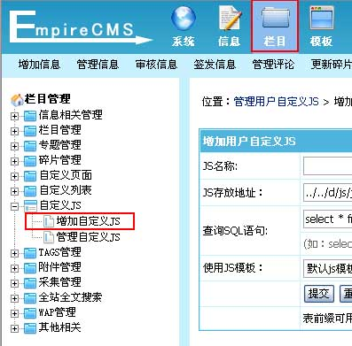

自定义JS
一、自定义JS功能说明
自定义JS功能：除了系统内置固定的信息JS调用外，用户还可以通过SQL条件生成相应信息JS调用，让JS调用更加灵活。
二、增加自定义JS
1、登录后台，单击“
栏目
”菜单，选择“
增加自定义JS
”子菜单，进入增加自定义JS界面：

2、进入
增加自定义JS
界面，如下图：
JS名称
填写JS调用名称。
JS存放地址
填写JS文件存放地址（地址从后台目录开始算，“../../”表示在根目录）。
查询SQL语句
填写要调用信息的查询SQL语句。
使用JS模板
选择使用的JS模板（JS模板制作具体可以看“美工手册”）。
3、增加自定义JS后，返回
管理自定义JS
页面，如下图：
[预览]
预览生成的JS文件调用效果。
[刷新]按钮
更新选中的自定义JS。
JS调用方法
页面任意位置加：<script src="JS地址"></script>，例子：<script src="
/d/js/js/1306747400.js
"></script>
4、点击“
[预览]
”可看到调用效果：